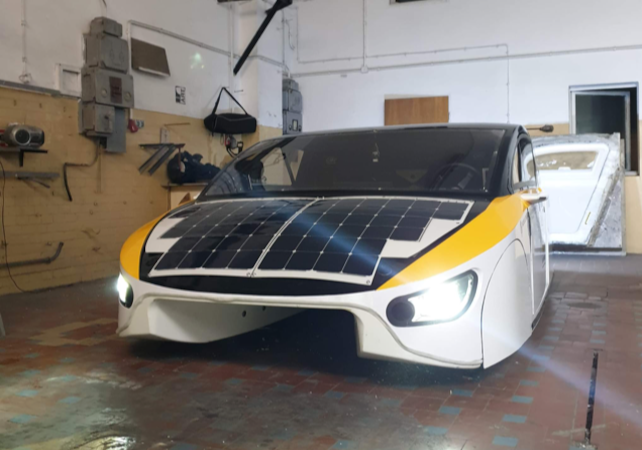
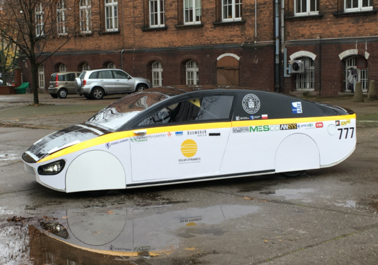
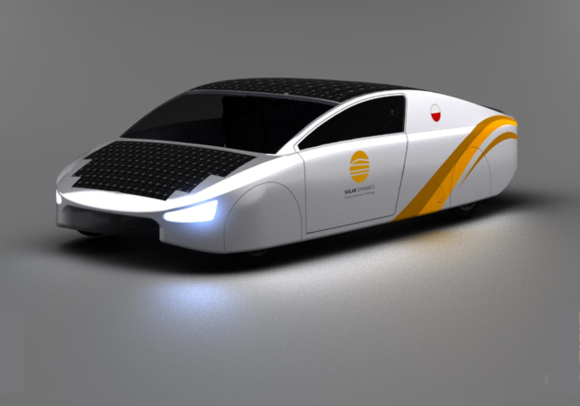
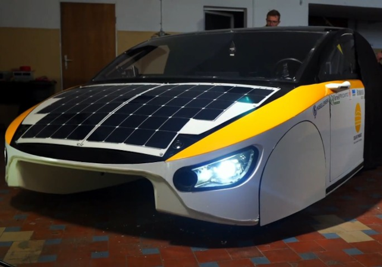
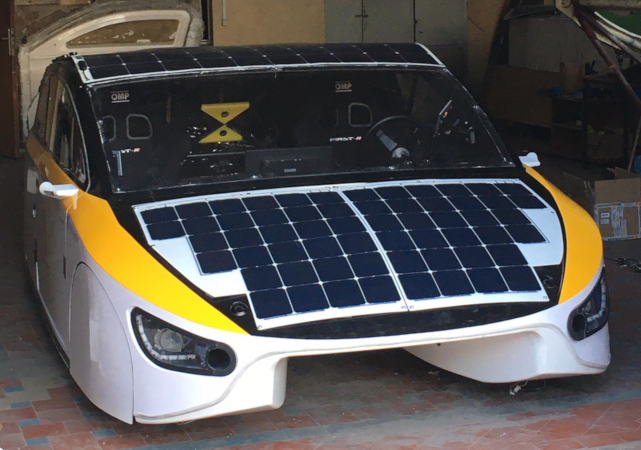
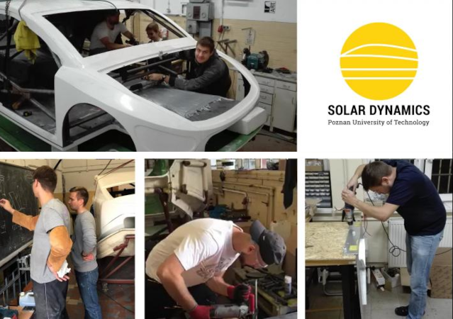
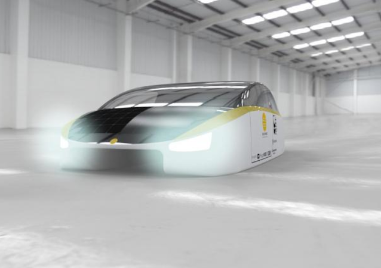

Below you'll find answers! Read articles, listen to our podcasts and watch our promo video!
"Tanie auto od studentów Politechniki Poznańskiej. Zasila je energia słoneczna."

"Organizacja studencka - PUT Solar Dynamics."

"Premiera - solarne auto - PUT Solar Dynamics."

"Klara jest dziełem studentów Politechniki Poznańskiej. samochód napędzany słońcem."

"Studenci Politechniki Poznańskiej skonstruowali samochód solarny."

"SAMOCHÓD SOLARNY PUT SOLAR DYNAMICS!."

"Budują samochód solarny!"

"„Klara” wykorzysta każdy promień słońca. Przejedzie 500 kilometrów bez ładowania"